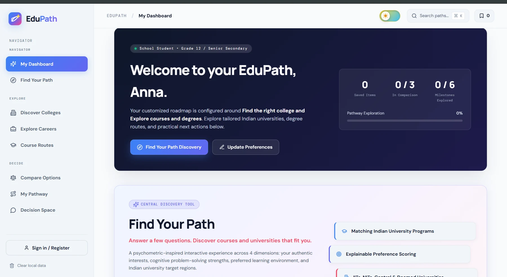
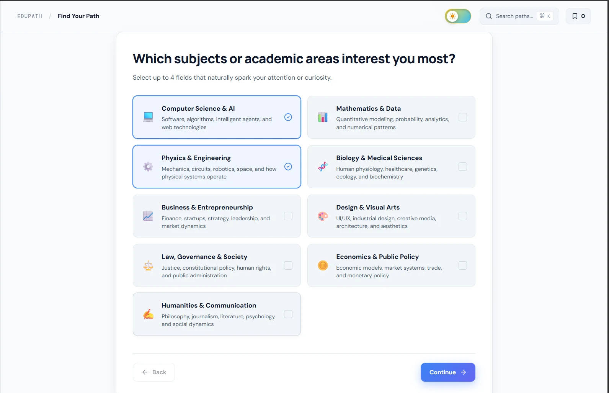
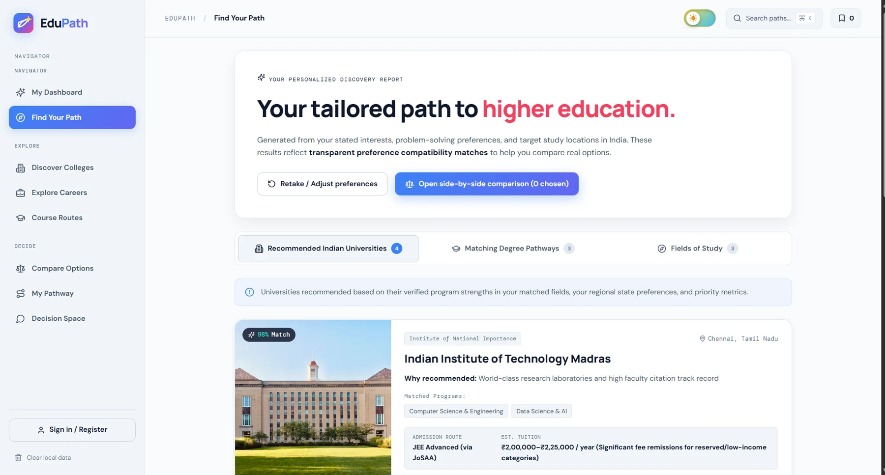
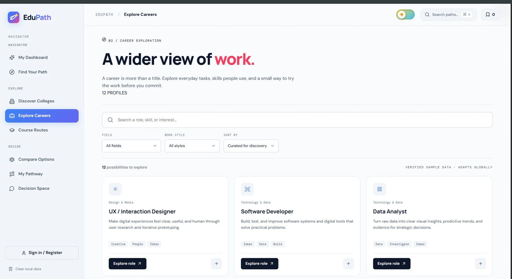
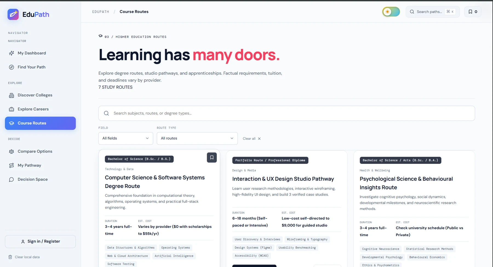

Too many options.
Not enough direction.
Choosing what to study and where to study can feel overwhelming. Students have access to endless course listings, university websites and career information, but those pieces rarely help them understand how everything connects — or where they should begin.
Lack of direction
Students may not yet understand their interests, strengths or suitable academic pathways.
Information overload
Searching across disconnected platforms makes relevant options difficult to compare.
Unclear next steps
It can be hard to connect a course choice to universities, careers and future possibilities.
What if students started with themselves?
Instead of asking students to choose from a long list straight away, Pathfinder begins with their interests, strengths and preferences — then connects those discoveries to courses, institutions and career directions.
“Help students move from uncertainty to informed educational decisions.”
Discover → Explore → Plan
The platform is structured as one connected journey, rather than a set of unrelated directories and tools.
Understand yourself
Guided questions explore academic interests, strengths, learning preferences, curiosity and aspirations.
See what’s possible
Translate those preferences into relevant fields of study, degree routes, universities and career directions.
Find the next step
Save possibilities, compare options and organise discoveries into a clearer educational roadmap.
One place to connect the dots.
The interface brings self-discovery, university exploration, career discovery and course pathways into a single experience.
Find Your Path
A guided, psychometric-inspired question flow designed to make self-discovery feel approachable, not like an exam.
Discover Colleges
A directory experience for exploring Indian and international institutions, with search and filters to narrow the field.
Explore Careers
Career profiles connect fields of interest with everyday work, skills and possible professional directions.
Course Routes
Explore degree routes, studio pathways and other ways to build knowledge in a chosen area.
From first questions to a personal discovery report.
A look at the key screens and how the experience moves from the dashboard into discovery and onward exploration.





Good guidance should open doors, not choose one for you.
Pathfinder explores how design can make a complicated decision feel more navigable. The important part is not simply recommending a course or a college; it is helping students understand why an option may fit, what else they could explore, and what their next step might be. Recommendations should support a student's decision — never make it on their behalf.
A little less “what now?” and a little more “what if?”